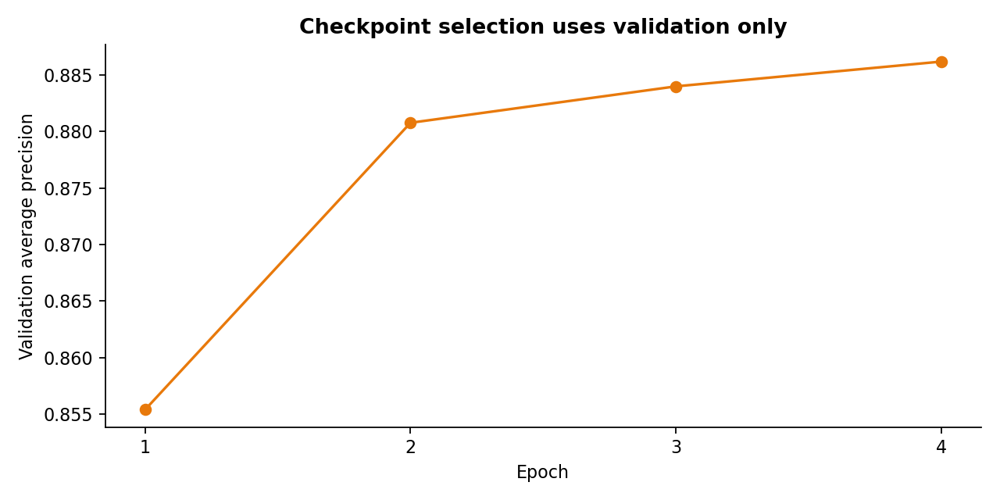
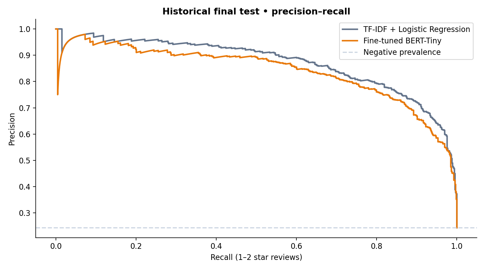
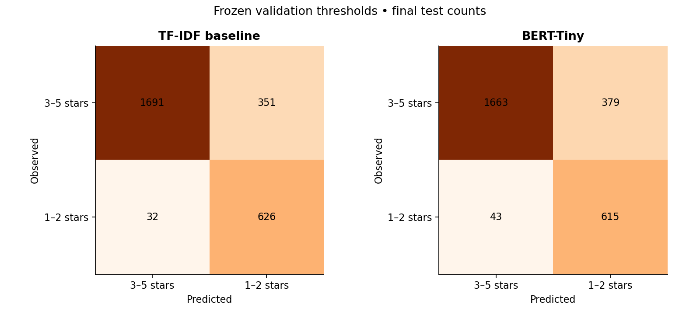

01 / BUSINESS UNDERSTANDING
Problem and decision
Product teams receive more reviews than they can read. This case builds a queue of potentially negative reviews, prioritizing recall while exposing false alarms. It does not automatically identify complaint causes.
02 / DATA UNDERSTANDING & PREPARATION
Real data, explicit scope
All_Beauty, Amazon Reviews 2023 / McAuley Lab: 701,528 source records. After normalization, filtering since 2020, at least 25 characters and text deduplication, 310,590 eligible records. Deterministic sample of 18,000 reviews using the lowest text SHA256 keys. No language detection: the model is intended for English.
Training: 12,600; validation: 2,700; test: 2,700. Chronological split, with no overlapping texts or timestamps between periods. Ratings define labels (1–2 vs. 3–5 stars); only title and body enter the model. Products may recur: evaluation measures later reviews, not unseen products.
Test period: 2022-05-22 → 2023-09-01.
03 / MODELING
Deep learning with a comparison baseline
Google BERT-Tiny, with two Transformer blocks and 128-dimensional representations, fine-tuned end to end on CPU. Four epochs; epoch 4 checkpoint selected by validation average precision. Baseline: unigram/bigram TF-IDF + logistic regression. Each threshold maximizes validation F2; test data is evaluated only after freezing these choices.

04 / EVALUATION
What the test showed
The traditional baseline achieved higher final-test average precision. This result is retained: deep learning does not guarantee improvement.
| Model | AP | Precision | Recall | F2 | Queue |
|---|---|---|---|---|---|
| TF-IDF + Logistic Regression | 0.871 | 64.1% | 95.1% | 0.867 | 36.2% |
| BERT-Tiny | 0.840 | 61.9% | 93.5% | 0.848 | 36.8% |
AP = average precision. Final-test 1–2-star prevalence: 24.4%. AP difference neural − baseline: -0.031; bootstrap 95%: [-0.049, -0.014].


05 / BUSINESS SCENARIO
Size the human review queue
Estimate using BERT rates observed on the final test. A proportional scenario, not a real-operation guarantee.
06 / LIMITATIONS & DEPLOYMENT
Limits and next steps
Ratings are an imperfect dissatisfaction proxy; 3-star reviews belong to the reference class. Text is truncated to 128 tokens and scores are not calibrated probabilities. One category, one seed and a historical period; no demonstrated ROI, return reduction or current Amazon performance. Paired bootstrap with 500 resamples does not handle product or temporal dependence.
In this scope, TF-IDF is the initial pilot candidate: it had better AP, recall and precision. BERT remains a research alternative. Recommendation: pilot with human review, collect complaint-cause labels and compare reading time, queue precision and missed complaints. Validate recent periods and other categories before automation. The local app supports text inference; this page displays historical results without sending reviews to external services.
Notebook ↗Model card ↗